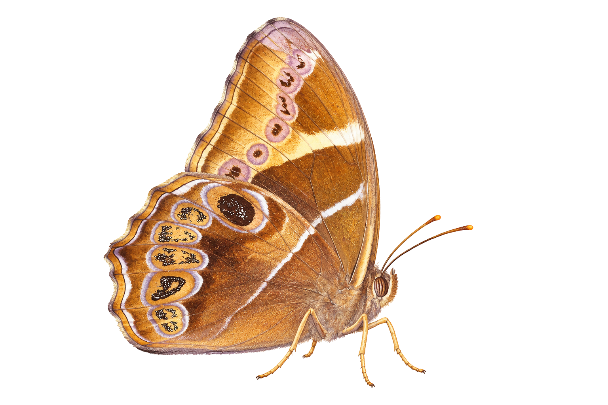

ジャノメチョウ類 · 138 / 165
シロオビヒカゲ
Lethe europa

特徴・見分け方
褐色の翅裏に白い斜めの帯が走る。後翅裏の眼状紋も目立つ。
雌雄の違い
今回確認した資料では、確実に使える外見上の雌雄差は未確認。
大きさ
海外標本の前翅長の例：雄29～32mm、雌33～34mm（フィリピン・ボホール島、亜種cevanna）。沖縄個体の範囲ではない。
沖縄の島別記録
石垣島、西表島、与那国島、小浜島、黒島、波照間島に記録。沖縄本島の古い記録は具体データ不足を指摘されている。
生息環境
幼虫の食樹となる竹類のある林や林縁。
生態・識別上の補足
県内全域の普通種とは扱わない。地域資料は沖縄本島の記録を除外する文献もあると注記する。
幼虫・食草
ホウライチク、ホテイチク、リュウキュウチク、リョクチクなどの竹類。
参照元・参考資料
- 沖縄蝶類生態図鑑：シロオビヒカゲ
資料内の参照日: 2026-11-10 - 岩手大学所蔵論文：Melanitis boisduvaliaの表記
資料内の参照日: 2026-11-10
掲載内容は提供データ（2026年11月10日更新）に基づきます。記録島は現在の定着や観察の容易さを保証しません。イラストは参考表現で、同定には実物の形態と参照資料を併せて確認してください。